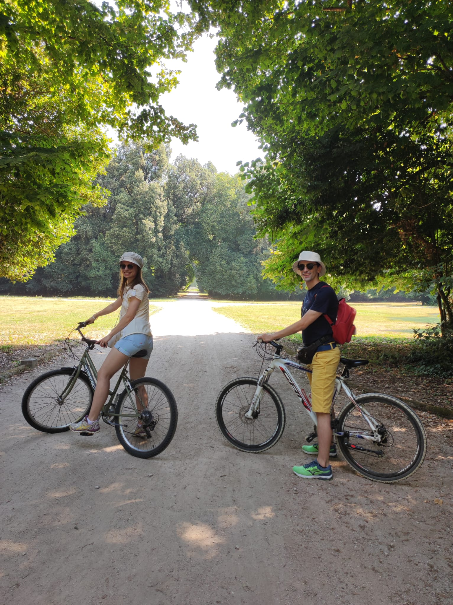
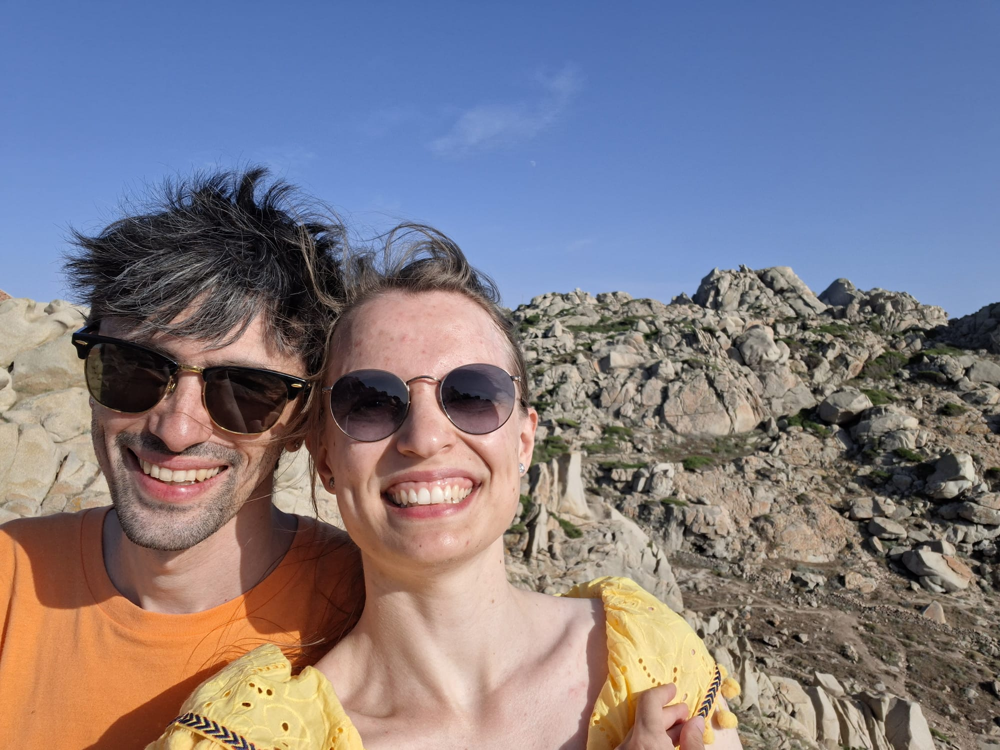
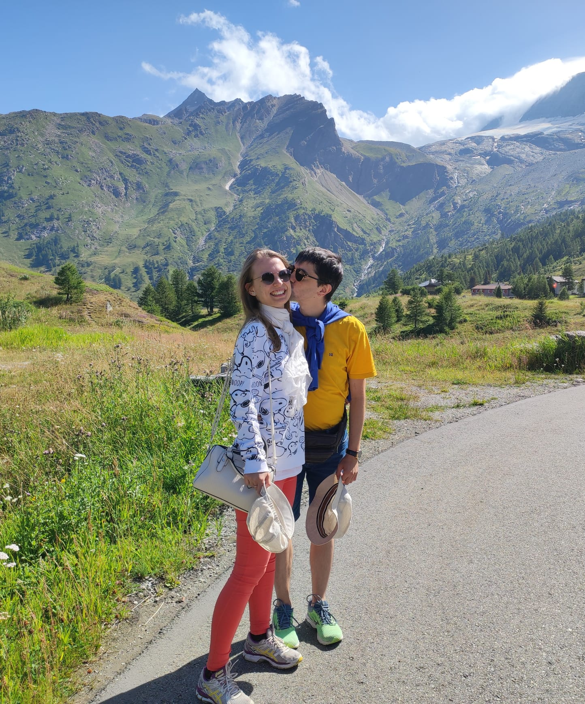
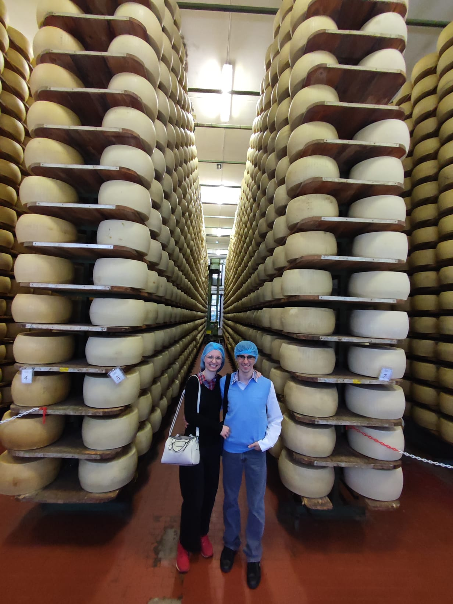
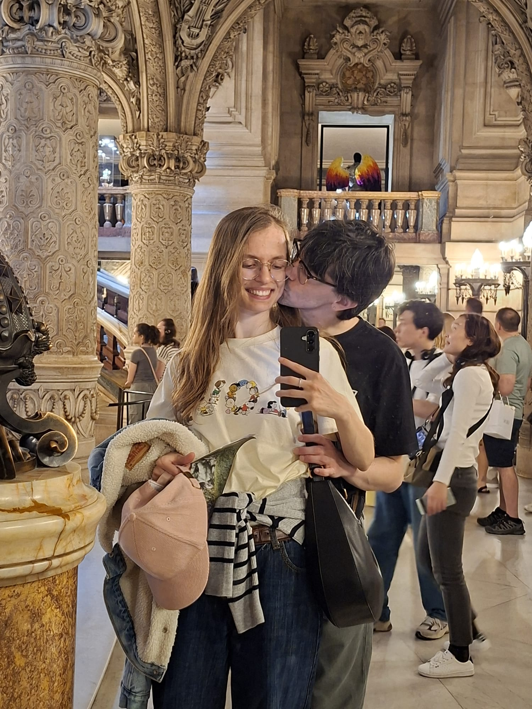
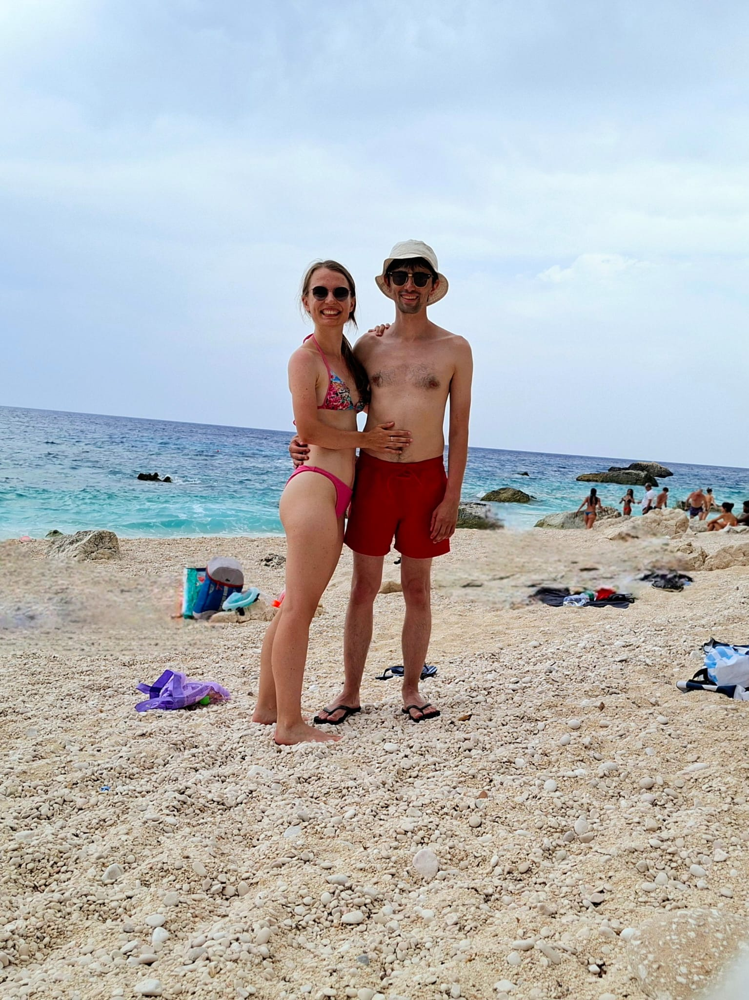
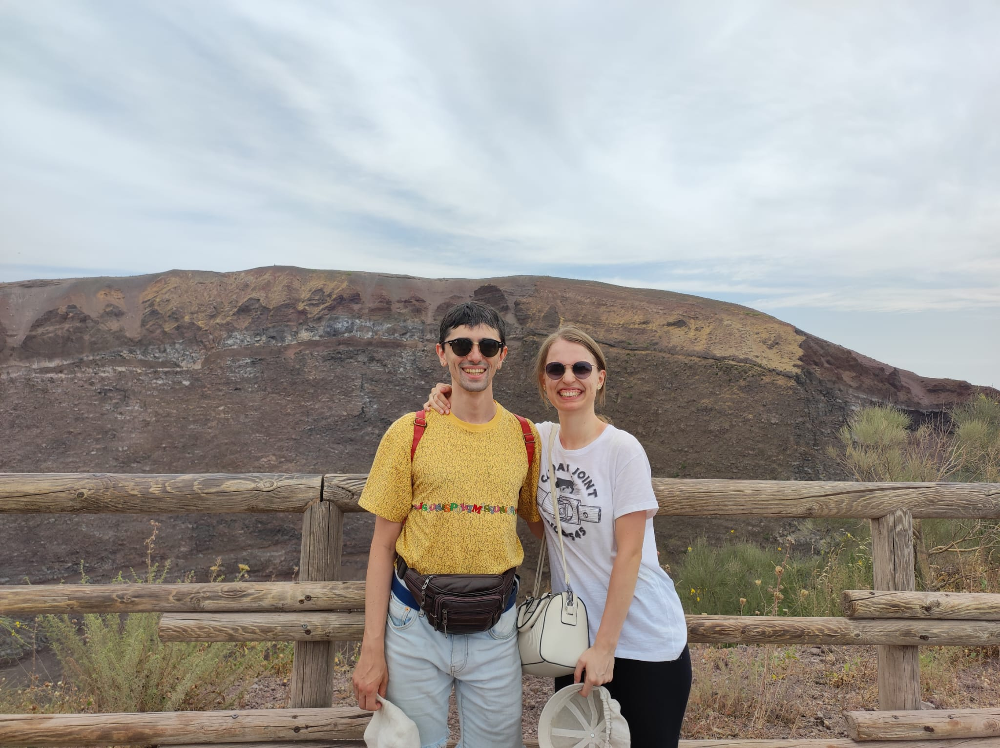
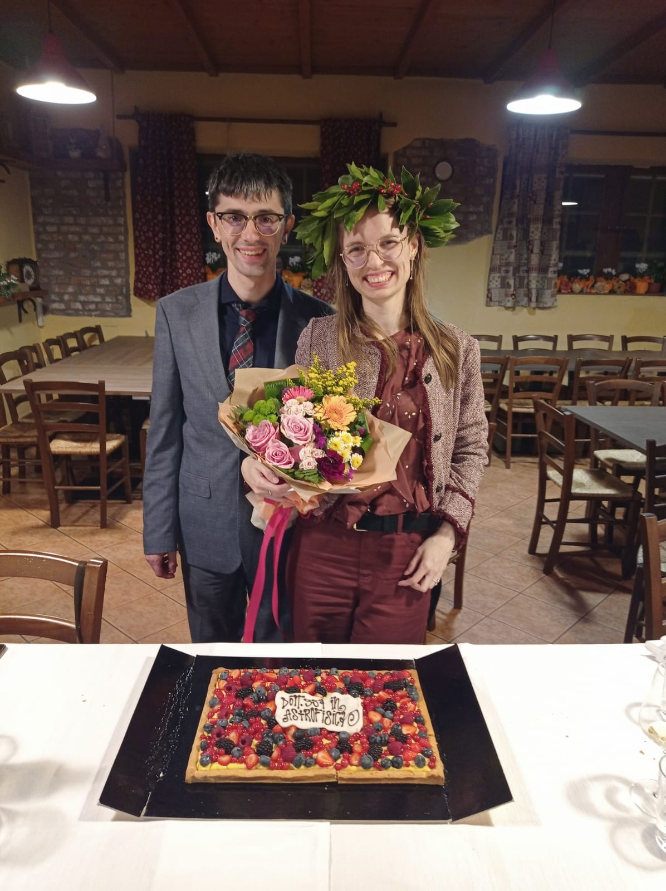
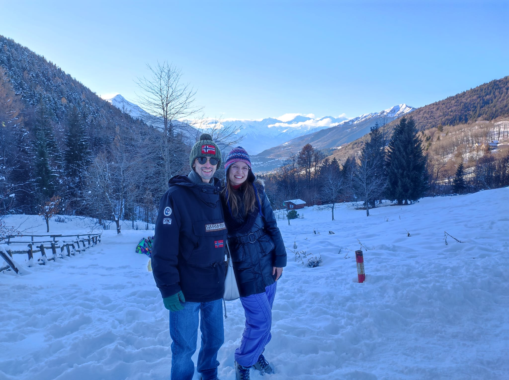
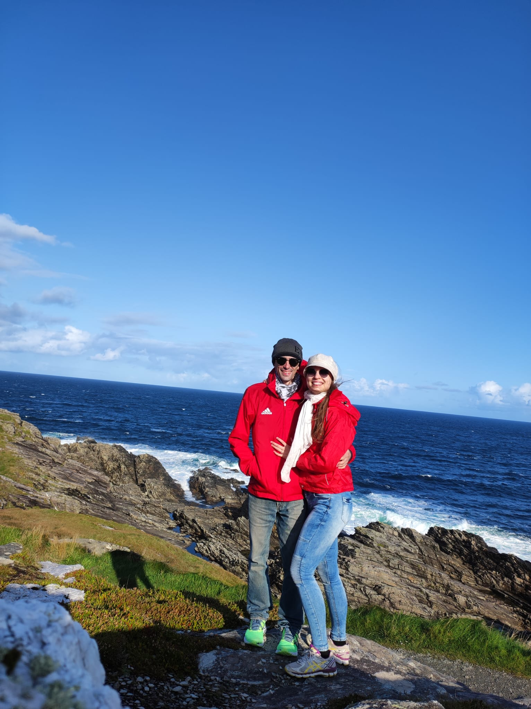

Per la cerimonia
Parcheggio davanti al Comune
Attenzione: i posti disponibili qui sono pochi. Ci sono altri parcheggi vicinissimi e molto più liberi e grandi.
Apri in Google MapsNoi due










Il programma
Si comincia la mattina e si finisce prima di cena. La cerimonia è in centro a Toceno, il resto della giornata più in alto in località Promezzo: l'unico momento in cui ci si sposta è a metà mattina, subito dopo il Comune. Gli orari sono indicativi, tranne quello della cerimonia.
Ci troviamo tutti in Piazza della Chiesa, davanti al Comune. Mezz'ora di margine per parcheggiare con calma e salutarsi.
Nella sala del Comune di Toceno. Questo è l'unico orario da rispettare, quindi arrivate con qualche minuto di margine.
Ci spostiamo alla sede degli Alpini, un centinaio di metri più in alto. La strada è stretta e in salita: si sale in colonna, senza fretta, e nessuno resta a piedi.
Siamo a 1000 metri, con la valle davanti. Il terreno è prato e ghiaino: se portate tacchi sottili, mettete in borsa un cambio.
I posti sono assegnati e i menù tengono conto delle allergie che ci segnalate nel modulo.
Il pomeriggio scorre lento, con la valle davanti. Nessuno ha fretta di andare via.
La festa finisce prima di cena, con ancora la luce buona per scendere in valle.
I luoghi
Due punti dello stesso paese, in provincia di Verbania, a un passo dal confine svizzero. Si arriva da Domodossola risalendo la Valle Vigezzo.
Piazza della Chiesa 1, 28858 Toceno (VB) · 907 m di quota
Località Promezzo 111, 28858 Toceno (VB) · 1010 m di quota
Davanti alla location del ricevimento c'è uno spiazzo per far scendere dall'auto chi ne avesse bisogno, ma è meglio non parcheggiare qui! Scegliete invece uno dei parcheggi qui sotto. Eventualmente ci sono altre zone per parcheggiare nel paese, ma attenzione alle salite: siamo in montagna!
Per la cerimonia
Attenzione: i posti disponibili qui sono pochi. Ci sono altri parcheggi vicinissimi e molto più liberi e grandi.
Apri in Google MapsPer la cerimonia
Parcheggio grande a 1 minuto a piedi dal Comune.
Apri in Google MapsPer la cerimonia
Parcheggio grande, a 2 minuti a piedi dal Comune.
Apri in Google MapsPer il ricevimento
Brevissima salita per raggiungere gli Alpini.
Apri in Google MapsPer il ricevimento
Un'altra possibilità per lasciare l'auto prima di raggiungere gli Alpini.
Apri in Google MapsPer il ricevimento
Cinque minuti di salita per raggiungere gli Alpini.
Apri in Google MapsAutostrada A26 fino a Gravellona Toce, poi la SS33 del Sempione verso Domodossola. Da lì si prende la SS337 della Valle Vigezzo e si risale fino a Toceno.
Per il ricevimento si continua a salire oltre il paese, verso Arvogno, fino a Promezzo: da Domodossola sono 18 km in tutto.
Parcheggio: i punti esatti sono qui sopra, con il link per la navigazione.
Prima fino a Domodossola, poi il trenino della Ferrovia Vigezzina-Centovalli in direzione Locarno.
Toceno non ha una fermata: si scende a Santa Maria Maggiore, che è a 2 km dal paese. Se arrivate in treno scrivetelo nel modulo, così vi veniamo a prendere.
Da Piazza della Chiesa a Promezzo si sale in pochi minuti d'auto, subito dopo la cerimonia. Chi è senza mezzo non deve preoccuparsi: ci si organizza sul posto e ci sono posti in macchina per tutti.
Stiamo valutando una navetta per la salita e per il rientro: appena è deciso lo scriviamo qui.
La base più comoda è Santa Maria Maggiore, il centro principale della valle, a pochi minuti da Toceno: ci sono alberghi e appartamenti.
Stiamo raccogliendo qualche indirizzo e delle camere convenzionate: trovate l'elenco qui appena pronto.
Siamo tra i 900 e i 1000 metri e la giornata è quasi tutta all'aperto, nelle ore in cui il sole picchia di più: a quest'altitudine scalda molto più che in pianura. Occhiali, cappello e crema solare servono davvero.
Verso le sei di sera, quando ci salutiamo, la temperatura è già scesa: una giacca leggera in auto non guasta. Il terreno è prato e ghiaino, quindi meglio scarpe che stiano in piedi da sole.
Conferma la presenza
Un modulo per gruppo: chi compila è la persona di riferimento per tutti gli altri. Le allergie servono al catering, quindi sono obbligatorie per ogni invitato.
Regali
La cosa che ci fa più piacere è avervi lì. Chi desidera contribuire può farlo con un bonifico: stiamo mettendo da parte per il viaggio di nozze in Giappone.
Intestatari
Ivan Cucchi e Greta Zucchi
IBAN
IT60X0542811101000000123456
Causale
Regalo di nozze — il vostro nome
Copiato